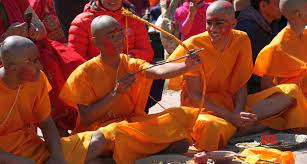
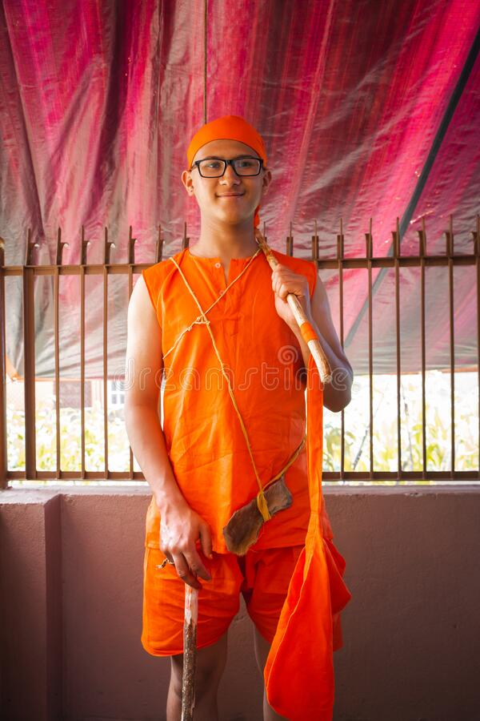

BRATABANDHA

A boy waits for his Bratabandha to begin. Bratabandha is a complex Hindu ceremony where boys, between 8 and 12, take the first steps in learning the traditional laws, ceremonial roles and rituals of their caste. In Nepal, it is considered the beginning of manhood. Before the ceremony boys wear a traditional orange headband pierced with a porcupine spine, for protection from evil.The boys warm themselves in front of the fire, close by a priest prepares. The boys try to behave like young men until the urge to wrestle overwhelms them.This Bratabandha is being performed by 6 Brahman priests, though only 2 are technically required. Red, white, yellow patterns, Swasti, were made around the fire for protection and to mark an elaborate place setting, indicating where each god should sit as they joined the ceremony. Pujas are performed to Ganesh, and light and water.Female relatives watch anxiously. Even at a Bratabandha, Nepali boys are never men in the eyes of the women who raise them.Bratabandha is a basic ritual that every boy has to go through in the Hindu religious belief.

This process is the gateway to maturity for the boy. The date and time for the Upanayana ritual have to be kept in focus according to Shastras. Without this Sanskar, a boy is considered as an incomplete being and along with this, the absence of this ceremony can even hamper his Marriage the reason being without Bratabandha, males born in the Hindu belief system cannot be married.The rituals in Bratabandha vary from community to community. In Hindu communities, rituals during the Bratabandha represent the banishment of the boy (symbolization of Lord Ram’s exile) whereas, in Buddhist communities, the rituals represent the abandonment of worldly pleasures by the boy and transition to a monk (symbolization of Buddha’s retreat from worldly pleasures).